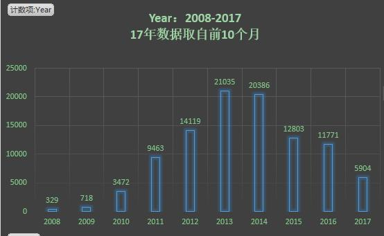
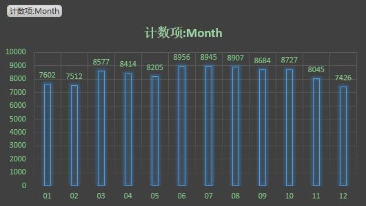
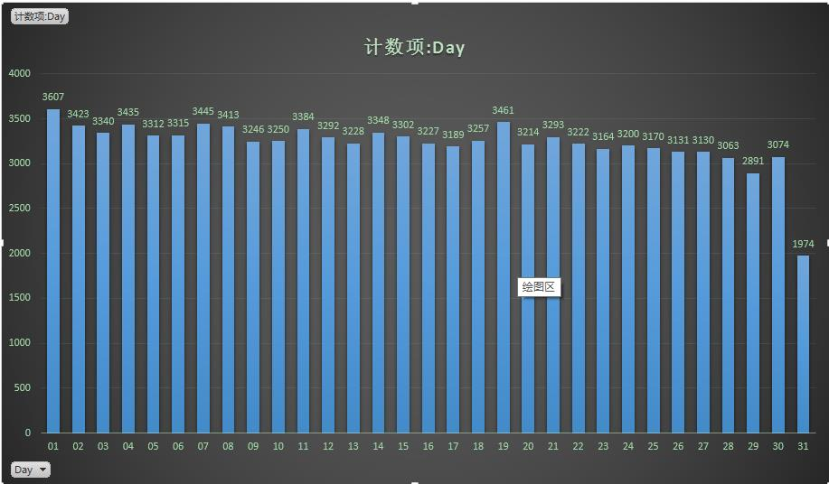

学习机器学习算法，手上没有数据，于是决定自己动手，爬取QQ空间数据
Python3.6获取QQ空间全部好友列表 Practical Data Science Cookbook .Tony Ojeda Sean, Patrick Murphy,Benjamin Bengfort ,Abhiji Dasgupta PACKT PUBLISHING
只举例好友网络，说说时间，过多信息涉及好友隐私
说明:为防止腾讯检测，随机丢掉一部分数据。
整张网络结构：过大，根本看不出什么
hops表示最多经过几个节点(人)
随机抽取10w数据，统计。可以从下面（特别是小时统计）看出，在网络中的作息规律。10w数据随机选择，然后17年只有1-9月的数据



version 1 将自己的账号密码写入一个文本(userinfo.ini)，时候操作过快会提示错误
1 2 3 4 5 6 7 8 9 10 11 12 13 14 15 16 17 18 19 20 21 22 23 24 25 26 27 28 29 30 31 32 33 34 35 36 37 38 39 40 41 42 43 44 45 46 47 48 49 50 51 52 53 54 55 56 57 58 59 60 61 62 63 64 from selenium import webdriverimport requestsimport timeimport osfrom urllib import parseimport configparserclass Spider (object) : def __init__ (self) : self.web=webdriver.Firefox() self.web.get('https://user.qzone.qq.com' ) config = configparser.ConfigParser(allow_no_value=False ) config.read('userinfo.ini' ) self.__username =config.get('qq_info' ,'qq_number' ) self.headers={ 'host' : 'h5.qzone.qq.com' , 'accept-encoding' :'gzip, deflate, br' , 'accept-language' :'zh-CN,zh;q=0.8' , 'accept' :'text/html,application/xhtml+xml,application/xml;q=0.9,image/webp,image/apng,*/*;q=0.8' , 'user-agent' :'Mozilla/5.0 (X11; Ubuntu; Linux i686; rv:55.0) Gecko/20100101 Firefox/55.0' , 'connection' : 'keep-alive' } self.req=requests.Session() self.cookies={} def login (self) : self.web.switch_to_frame('login_frame' ) log=self.web.find_element_by_id("switcher_plogin" ) log.click() time.sleep(1 ) username=self.web.find_element_by_id('u' ) username.send_keys(self.__username) ps=self.web.find_element_by_id('p' ) ps.send_keys(self.__password) btn=self.web.find_element_by_id('login_button' ) time.sleep(5 ) self.web.get('https://user.qzone.qq.com/{}' .format(self.__username)) cookie='' for elem in self.web.get_cookies(): cookie+=elem["name" ]+"=" + elem["value" ]+";" self.cookies=cookie self.get_g_tk() self.headers['Cookie' ]=self.cookies self.web.quit() def get_g_tk (self) : p_skey = self.cookies[self.cookies.find('p_skey=' )+7 : self.cookies.find(';' , self.cookies.find('p_skey=' ))] h=5381 for i in p_skey: h+=(h<<5 )+ord(i) print('g_tk' ,h&2147483647 ) self.g_tk=h&2147483647 if __name__=='__main__' : sp=Spider() sp.login()
version 2
1 2 3 4 5 6 7 8 9 10 11 12 13 14 15 16 17 18 19 20 21 22 23 24 25 26 27 28 29 30 31 32 33 34 35 36 37 38 39 40 41 42 43 44 45 46 47 48 49 50 #coding:utf-8 import requests import time import os from urllib import parse class Spider(object): def __init__(self): self.web=webdriver.Firefox() self.web.get('https://user.qzone.qq.com') self.__username ='这里填你的QQ号'#后续操作会用到 self.headers={ 'host': 'h5.qzone.qq.com', 'accept-encoding':'gzip, deflate, br', 'accept-language':'zh-CN,zh;q=0.8', 'accept':'text/html,application/xhtml+xml,application/xml;q=0.9,image/webp,image/apng,*/*;q=0.8', 'user-agent':'Mozilla/5.0 (X11; Ubuntu; Linux i686; rv:55.0) Gecko/20100101 Firefox/55.0', 'connection': 'keep-alive' } self.req=requests.Session() self.cookies={} def get_g_tk(self): p_skey = self.cookies[self.cookies.find('p_skey=')+7: self.cookies.find(';', self.cookies.find('p_skey='))] h=5381 for i in p_skey: h+=(h<<5)+ord(i) print('g_tk',h&2147483647) self.g_tk=h&2147483647 def login(self): print('请扫码登陆') while 1: if 'http://' in self.web.title: break print('扫码登陆成功') time.sleep(2) self.web.get('https://user.qzone.qq.com/{}'.format(self.__username)) cookie='' for elem in self.web.get_cookies(): cookie+=elem["name"]+"="+ elem["value"]+";" self.cookies=cookie self.get_g_tk() #time.sleep(10) self.headers['Cookie']=self.cookies self.web.quit() if __name__=='__main__': sp=Spider() sp.login()
networkx分析大体第一步都是构建网络，在网络中分增加节点node和增加egde,networkx支持批量添加。该部分和自己数据集的方式有关。
1 2 3 4 5 6 7 8 9 10 11 12 13 14 15 16 17 18 19 20 21 22 23 24 25 26 27 28 29 30 31 32 33 34 35 36 37 38 39 40 41 42 43 44 45 46 47 48 49 50 51 52 53 54 55 56 57 58 59 60 61 62 63 64 65 66 67 68 69 70 71 72 73 """ Created on Wed Oct 4 22:23:27 2017 @author: x """ import networkx as nximport matplotlib.pyplot as pltimport operatordef basic_info (G) : f=open('basic_info.txt' ,'w' ) f.write('网络节点数：' ) f.write(str(G.number_of_nodes()) + '\n' ) f.write('网络边数：' ) f.write(str(G.size()) + '\n' ) f.write('网络边加权和：' ) f.write(str(G.size(weight='weight' )) + '\n' ) scc=nx.strongly_connected_components(G) wcc=nx.weakly_connected_components(G) print("弱连接: " ) f.write('弱连接:' +'\n' ) for c in wcc: f.write(str(c)) f.write('\n' ) print("强连接: " ) f.write('强连接:' +'\n' ) for s in scc: f.write(str(s)+',' ) f.write('\n' ) f.write('有向图平均路径长度：' ) f.write(str(nx.average_shortest_path_length(G)) + '\n' ) G=G.to_undirected() f.write('平均聚类系数：' ) f.write(str(nx.average_clustering(G)) + '\n' ) f.write('平均路径长度：' ) f.write(str(nx.average_shortest_path_length(G)) + '\n' ) def node_exist (G,node) : if G.has_node(node): return True else : return False def draw_ego_graph (G,character,hops=1 ,show_lables=True) : """ Expecting a graph_from-gdf """ y="%s的%s代好友网络" %(character,hops) ego=nx.ego_graph(G,character,hops) pos = nx.spring_layout(ego) plt.figure(figsize=(12 ,12 )) plt.axis('off' ) nx.draw_networkx_edges(ego,pos,alpha=0.8 ,with_lables=True ) nx.draw_networkx_nodes(ego,pos,with_lables =True ,node_size=50 ,cmp=plt.cm.hot) if show_lables: nx.draw_networkx_labels(ego,pos) plt.title('<C>={}' .format(y)) plt.show() def key_people (G) : centrality=nx.degree_centrality(G) nx.set_node_attributes(G,'centrality' ,centrality) degrees =sorted(centrality.items(),key=operator.itemgetter(1 ),reverse =True ) for item in degrees[0 :10 ]:print("%s : %0.3f" %item)
key_people()函数用来寻找在网络中，对网络连通最大的节点。数据可以反映很多现实问题。